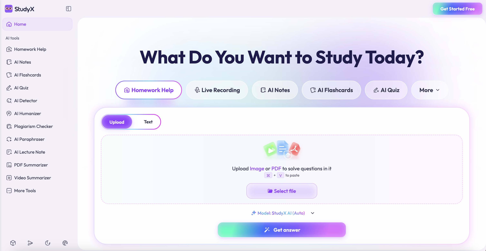
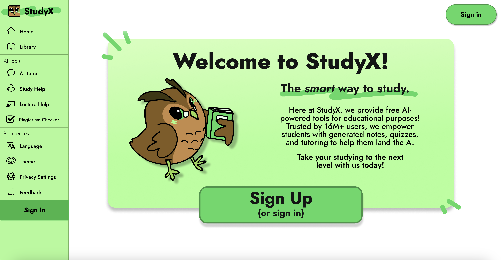
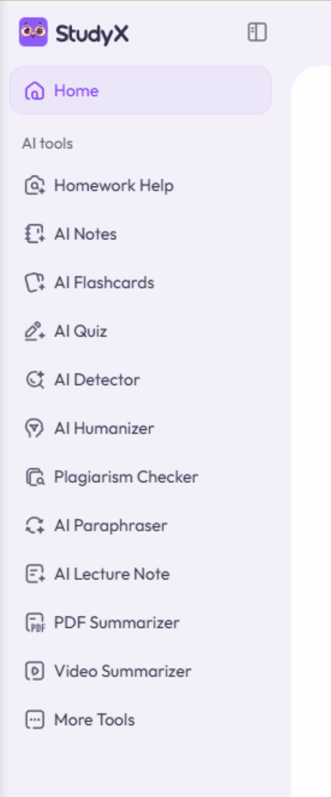
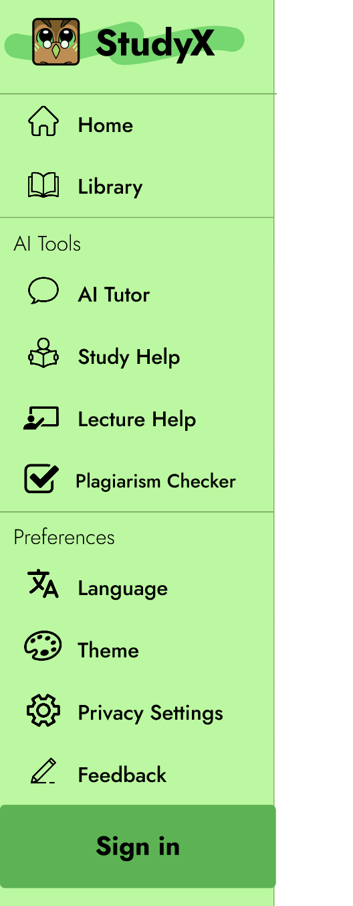
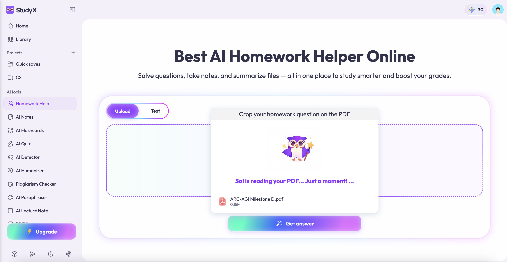
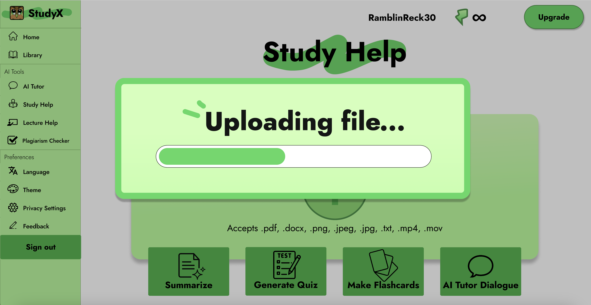
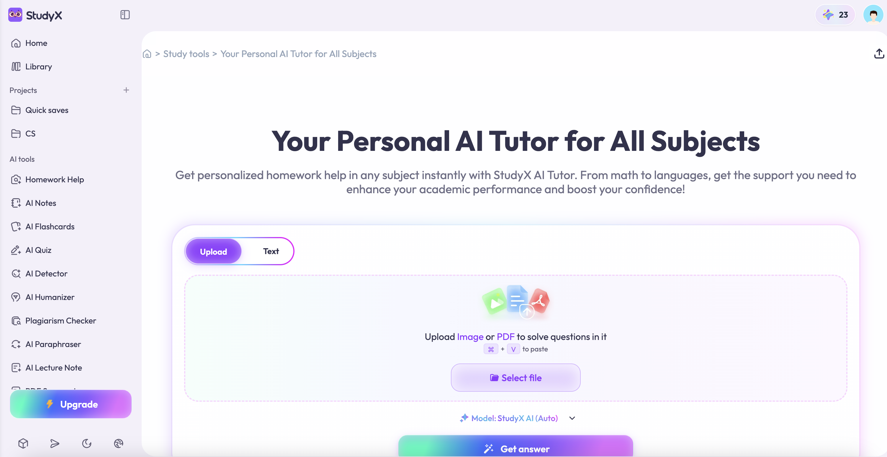
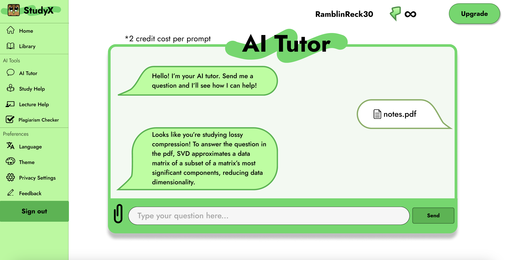
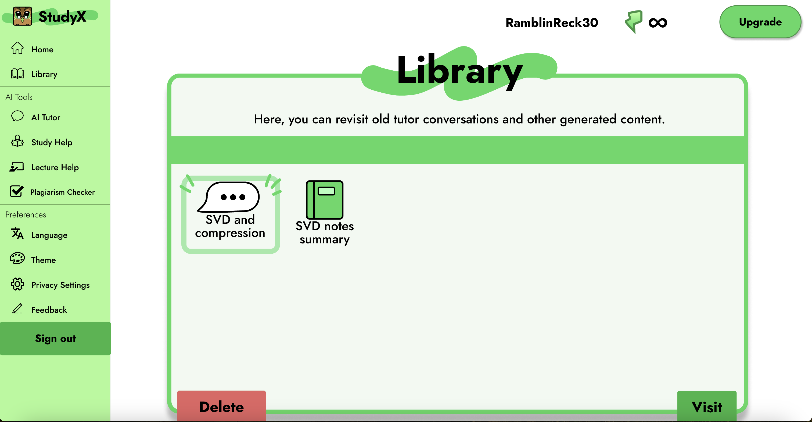
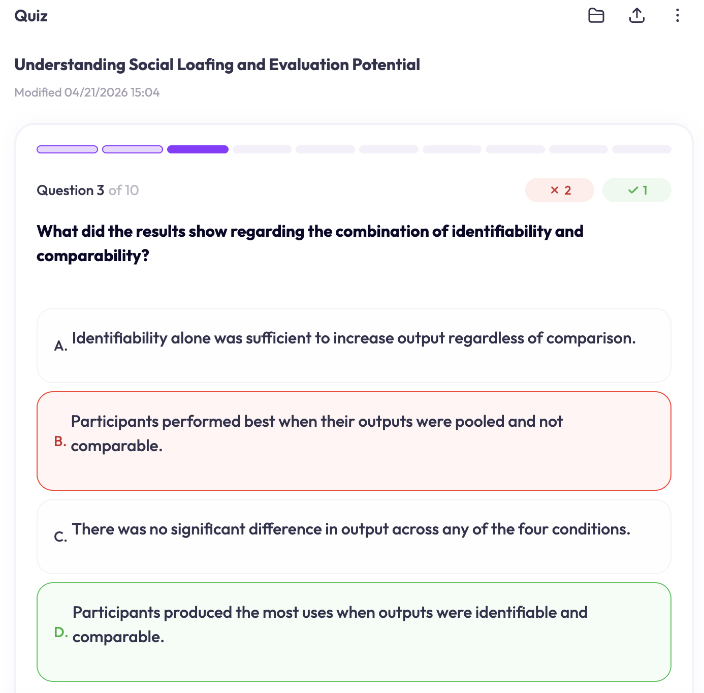

Recommendations
1. Add a clear onboarding area to the landing page
The existing product places users directly into an upload prompt. Our design adds a short welcome message, a plain explanation of what StudyX.ai does, and visible starting actions. This improves learnability by helping first-time users understand the system before they commit to an upload.
Before

After

2. Simplify and group the sidebar navigation
The existing sidebar presents too many tools at the same level. Our design groups navigation into Home, Library, AI Tools, and Preferences. This reduces visual scanning, lowers wrong-click rates, and supports efficiency. The trade-off is that some secondary tools become less visible, but the most common study workflows become easier to find.
Before

After

3. Show upload progress and status messages
The existing upload flow does not tell users whether a file is uploading, processing, or complete. Our design adds a progress bar, status text, and final confirmation. This improves system feedback and reduces user error, especially the repeated uploads observed during testing.
Before

After

4. Redesign AI Tutor as an ongoing tutoring chat
The existing experience treats help as a single request based on one upload or answer state. Our redesign makes AI Tutor a persistent chat workspace where students can upload files, ask an initial question, and continue with follow-up questions in the same conversation. This better supports real tutoring behavior: students can clarify confusing concepts, ask for examples, request simpler explanations, and connect answers back to their course materials without restarting the workflow. The trade-off is that the chat interface requires stronger conversation history and file-context handling, but it directly improves learnability, feedback quality, and user control.
Before

After

5. Redesign the Library for easier access and AI-assisted reuse
The existing product does not make saved materials feel actionable after upload. Our redesigned Library gives users a clearer place to revisit previous tutor conversations, generated summaries, and uploaded study materials. Instead of functioning only as storage, the Library becomes a working academic hub: students can open saved content, return to past AI conversations, and use library materials as context for future assistance. This improves efficiency for returning users because they do not need to re-upload the same documents or search through disconnected outputs.
After

6. Shift the visual style toward an academic learning environment
The original interface relies heavily on bright gradients, purple accents, and a tool-heavy layout that feels closer to a general AI utility dashboard. Our redesign uses a calmer green palette, stronger black text, simpler page structure, and consistent educational visual language. This aesthetic change is not only decorative; it supports readability, reduces visual noise, and makes the product feel more aligned with studying, coursework, and long-form learning. The main trade-off is that the redesign is less flashy, but the more focused style better supports trust and sustained academic use.
Before

After
High Fidelity Prototype
At the following link you will find our fully interactive Figma prototype, including the redesigned landing page, sidebar, upload flow, AI Tutor chat, Library, and updated visual system.
Open Figma PrototypeConclusion
This project showed that strong AI features still require clear interface design. StudyX.ai can generate useful learning materials, but our testing showed that users often could not access those benefits efficiently. The redesign focuses on practical changes that make the product easier to learn, easier to navigate, and more transparent during system processing.
Our team learned that user behavior often reveals problems that are easy to miss during normal design review. For example, the missing upload progress indicator looked minor at first, but it caused repeated uploads and lowered user confidence. Similarly, the long sidebar seemed feature-rich, but participants experienced it as cluttered and difficult to scan.
For the StudyX.ai engineering team, we recommend implementing the progress bar and sidebar grouping first because they are likely to improve high-frequency workflows with relatively low technical cost. The onboarding area can be added as a first-session state on the home page. The AI Tutor chat and redesigned Library require stronger support for conversation history, file context, and saved generated content, but they offer the greatest educational value. Together, these updates would make StudyX.ai more efficient, more understandable, and more useful for students.